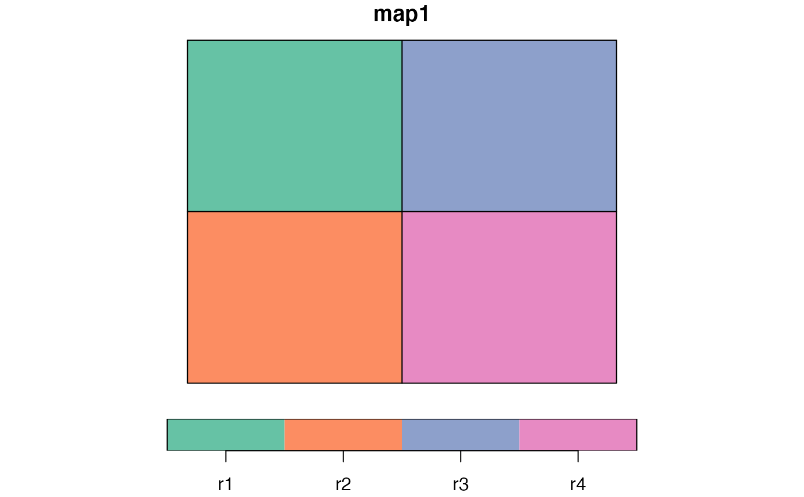
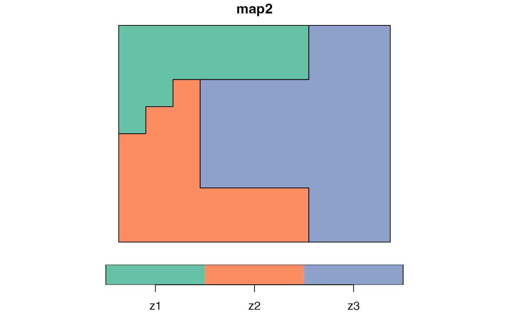
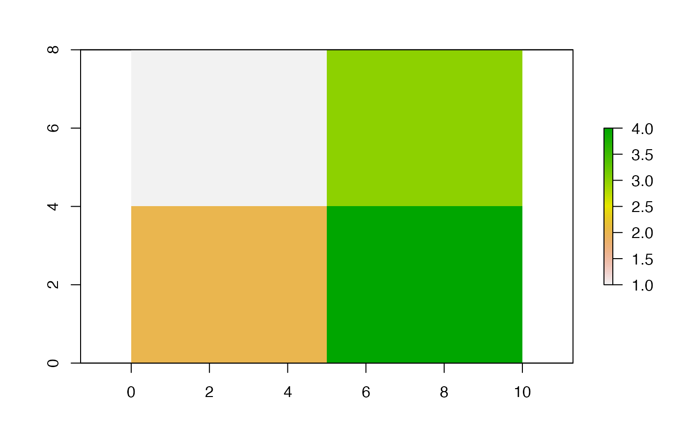
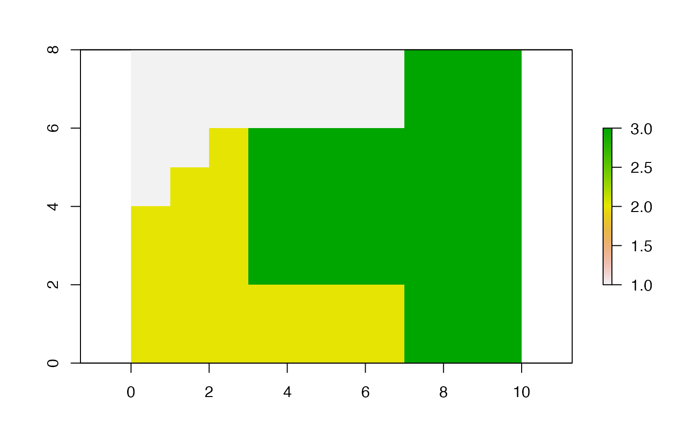

It calculates the Mapcurves's goodness-of-fit (GOF)
mapcurves_calc(x, y, x_name, y_name, precision = NULL)
# S3 method for sf
mapcurves_calc(x, y, x_name, y_name, precision = NULL)
# S3 method for stars
mapcurves_calc(x, y, x_name = NULL, y_name = NULL, precision = NULL)
# S3 method for SpatRaster
mapcurves_calc(x, y, x_name = NULL, y_name = NULL, precision = NULL)
# S3 method for RasterLayer
mapcurves_calc(x, y, x_name = NULL, y_name = NULL, precision = NULL)An object of class sf with a POLYGON or MULTIPOLYGON geometry type or a spatial raster object of class RasterLayer, SpatRaster, or stars.
An object of class sf with a POLYGON or MULTIPOLYGON geometry type or a spatial raster object of class RasterLayer, SpatRaster, or stars.
A name of the column with regions/clusters names.
A name of the column with regions/clusters names.
numeric, or object of class units with distance units (but see details); see st_as_binary for how to do this.
A list with four elements:
"map1" - the sf object containing the first map used for calculation of GOF
"map2" - the sf object containing the second map used for calculation of GOF
"ref_map" - the map used as a reference ("x" or "y")
"gof" - the Mapcurves's goodness of fit value
Hargrove, William W., Forrest M. Hoffman, and Paul F. Hessburg. "Mapcurves: a quantitative method for comparing categorical maps." Journal of Geographical Systems 8.2 (2006): 187.
library(sf)
#> Linking to GEOS 3.10.2, GDAL 3.4.2, PROJ 8.2.1; sf_use_s2() is TRUE
data("regions1")
data("regions2")
mc = mapcurves_calc(x = regions1, y = regions2, x_name = z, y_name = z)
mc
#> The MapCurves results:
#>
#> The goodness of fit: 0.61
#> Reference map: x
#>
#> The spatial objects can be retrieved with:
#> $map1 - the first map
#> $map2 - the second map
plot(mc$map1)

plot(mc$map2)

library(raster)
#> Loading required package: sp
data("partitions1")
data("partitions2")
mc2 = mapcurves_calc(x = partitions1, y = partitions2)
mc2
#> The MapCurves results:
#>
#> The goodness of fit: 0.61
#> Reference map: x
#>
#> The spatial objects can be retrieved with:
#> $map1 - the first map
#> $map2 - the second map
plot(mc2$map1)

plot(mc2$map2)
